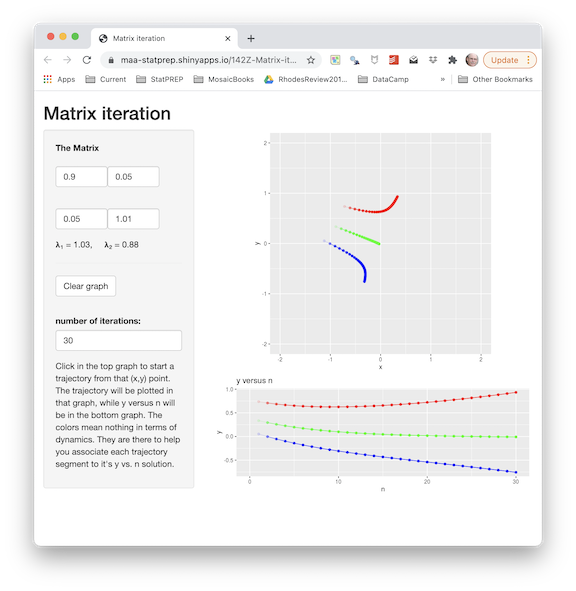

This app pictured below allowed you to trace trajectories of the system
\({\mathbf X}_{n+1} = {\mathbf A}\, {\mathbf X}_n\) 
With that app, you could construct a picture of the movement induced by \({\mathbf A}\) by comparing several trajectories from different initial conditions.
Now we’re going to look at the movement due to \({\mathbf A}\) by looking at things in a different, but closely related way. The difference is that the graphs will automatically start many trajectories at a grid of points in state space.
But showing lots and lots of trajectories creates a very busy and hard-to-interpret picture. So in addition to automatically starting at a grid of initial conditions, we’re going to simplify each trajectory. I should say, “drastically simplifying” each trajectory. Instead of following the trajectory for many steps, we’re going to plot only the very first step from each initial condition. And only a small part of that first step. Rather than connecting \({\mathbf X}_0\) and \({\mathbf X}_{1}\) with a line segment, we’re going to draw only a small fraction of that segment starting at \({\mathbf X}_0\) and pointing in the direction of \({\mathbf X}_1\). This is called a “flow field plot” (or, sometimes, a “phase plot”) and it will be an essential tool for moving from discrete-time dynamics onward to continuous-time dynamics.
Run the code in the sandbox and refer to the resulting graph to understand the following points.
A <- matrix(c(1, 1, 1, 0), nrow=2, byrow=TRUE)
A
show_matrix_dynamics(A)Use the sandbox to examine the motion induced by each of these matrices:
\[{\mathbf B} = \left[ \begin{array}{rc}1.1 & -1\\1 & -1\end{array} \right] \ \ \ \ \ {\mathbf C} = \left[ \begin{array}{rr}-.95 & 0.00\\.30 & -0.95\end{array} \right] \ \ \ \ \ {\mathbf D} = \left[ \begin{array}{rr}0.8 & 0.9\\0 & 0.3\end{array} \right] \]